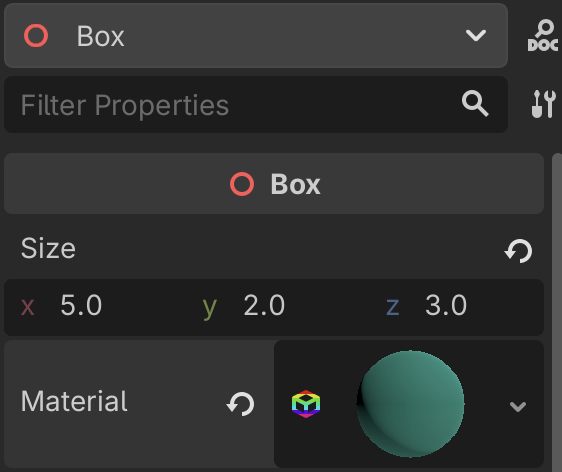
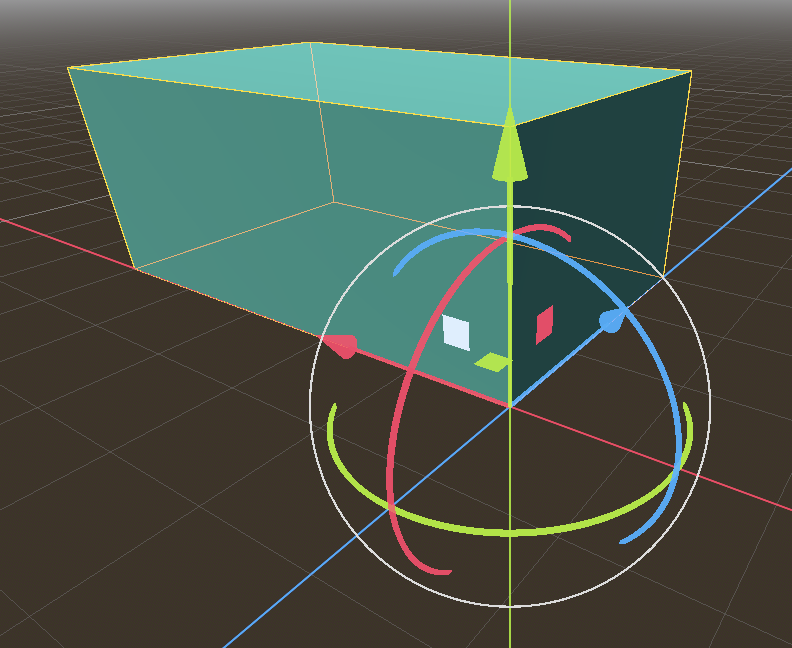
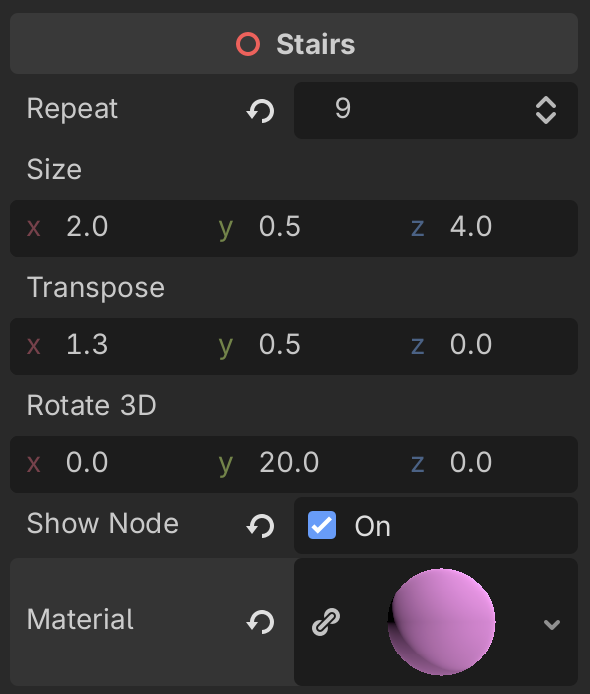
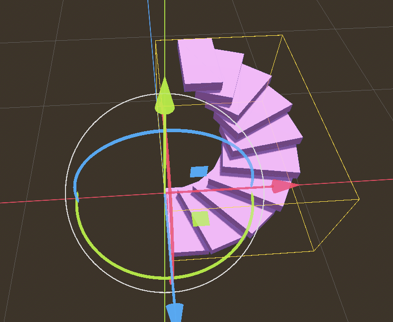

Basics¶
In this chapter we are placing the basis
We create an Autoload function with
world environment
sun light
player
scene switcher
World environment¶
We start with creating the world environment
configure snap to 0.5
create a CSGBox3D of 10x1x10
use collision on
add environment to scene
add Sun to scene
Player¶
Creating a box¶
The following code creates a CSG box programmatically.
The @tool directive allows to execute the programme in the editor.
The size of the box and the material is exported to the inspector panel.

Fly mode¶
By pressing the shift+F the editor goes into fly mode:
the mouse cursor disappears
the WS keys allow to zoom the camera (get closer)
the AD keys allow to go left-right
the QE keys allow to go up-down
the mouse allows to orient the camera
The corner of the box is aligned with the origin by offsetting the box by half of its size:
box.position = 0.5 * size
@tool
extends Node3D
class_name Box
## This class creates a Box.
## The size of the box.
@export var size = Vector3(2, 1, 4):
set(x):
size = x
create()
## The box material.
@export var material: BaseMaterial3D
func _ready():
create()
## Creating the box.
func create():
for child in get_children():
child.queue_free()
var box
box = CSGBox3D.new()
box.size = size
box.position = 0.5 * size
box.material = material
box.use_collision = true
add_child(box)

Staircase¶
The following shows how to build a staircase. We place a first step.

@tool
extends Node3D
## This class creates a staircase.
class_name Stairs
## Number of steps.
@export var repeat = 18:
set(x):
repeat = x
if is_node_ready():
create()
## Size of a step.
@export var size = Vector3(2, 0.5, 4):
set(x):
size = x
if is_node_ready():
create()
## Transposition vector (offset).
@export var transpose = Vector3(1.3, 0.5, 0):
set(x):
transpose = x
create()
# Euler angles of rotation
@export var rotate_3d = Vector3(0, 20, 0):
set(x):
rotate_3d = x
create()
# Show nodes in scene tree
@export var show_node = false:
set(x):
show_node = x
create()
# Staircase material
@export var material: BaseMaterial3D
func _ready():
create()
func create():
for child in get_children():
child.free()
var box
box = CSGBox3D.new()
box.name = "Step"
box.size = size
box.position = 0.5 * size
box.material = material
box.use_collision = true
add_child(box)
if show_node:
box.owner = get_tree().edited_scene_root
for i in (repeat):
box = box.duplicate()
box.name = "Step" + str(i+1)
box.translate(transpose)
box.rotate_x(deg_to_rad(rotate_3d.x))
box.rotate_y(deg_to_rad(rotate_3d.y))
box.rotate_z(deg_to_rad(rotate_3d.z))
add_child(box)
if show_node:
box.owner = get_tree().edited_scene_root

Download links¶
Download a Godot Script.
Download a Godot Scene.
Download a Godot Project.
View the game¶
View the See the game